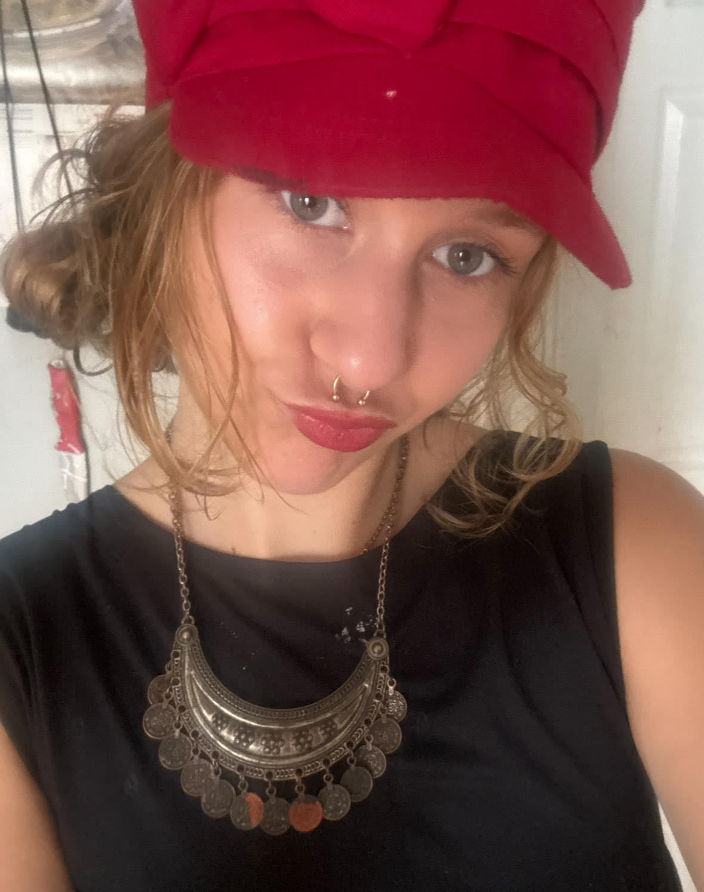

Sadie Racky is a Music Technologist with a concentration in hardware circuitry design and modular synthesis. She has a passion for building analog sound circuits as well as implementing microcontrollers with different softwares in her designs. She has proficiency in languages such as Python, C#, and Arduino (IDE), as well as VCV Rack, which is virtual modular synthesis.
Additional Skills
- MaxMSP: Node based programming langauge for music and media
- Supercollider (IDE): Software environment and interpreted language for real-time audio synthesis and algorithmic composition
- 3D printing Software modeling, and design
- KiCad and Fritzing:Circuit modeling software
- HTML, CSS, and JavaScript for programming websites
- DAW Production: Logic, ProTools, and FLStudios
Work-Related Skills
- Helped to research and develop software created by enginners at North Westen University to make these new programs efficent and optimal for youth. These included TunePad, MicroBit Music, and SportsSense.
- Taught youth robotics and coding skills: using Lego Robotics, MakeCode, and Minecraft Education
- Electronics Lab Aid at Columbia College: Assisting students with buliding and trouble shooting. As well as working to fix broken gear and keep the space clean and organized.
- Head Technologist at Columbia Library: Running 3D printing, solving software issues, and teaching a Technolgy course to fellow students
- Sound Engineering: Ran live sound and trouble shooting at Concord Music Hall
Extracurricular Work
- Vice President of Women in Audio: Running workshops and advocacy for Women in Technology and Audio
- President of Website Development Club
- Radio Engineering : Loyola University Radio Sound Engineering
Contact Me
Email: Sadie.Racky@gmail.com
Phone: 630-818-0143
LinkedIn: linkedin.com/in/sadie-racky
GitHub: github.com/Sadieracky1